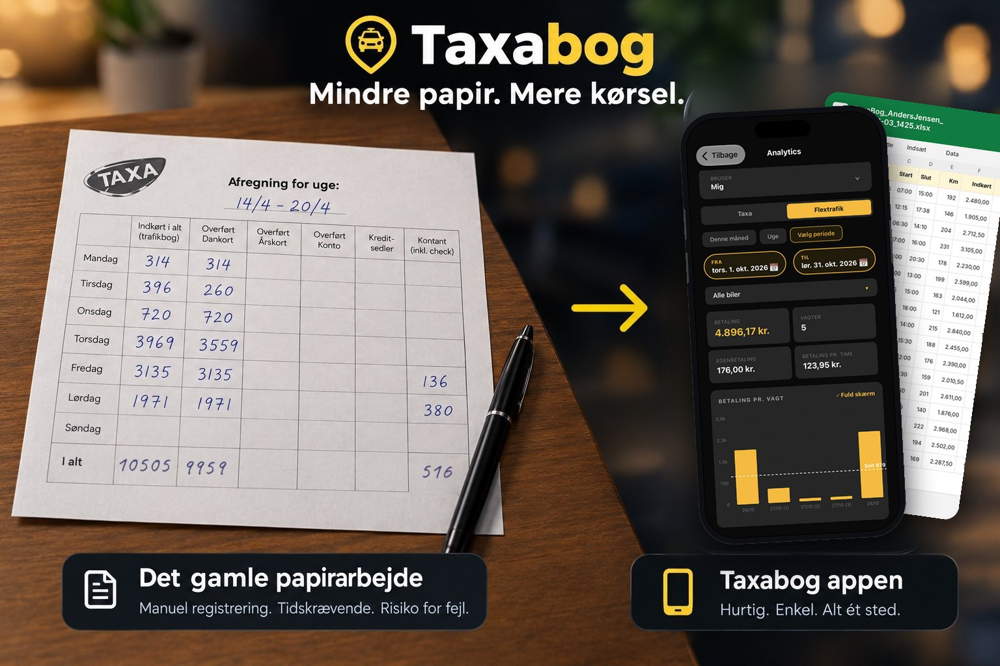
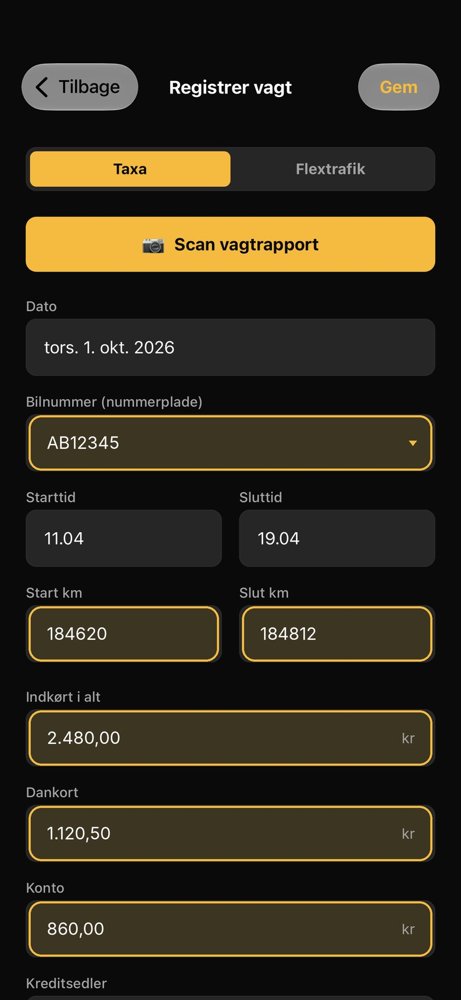
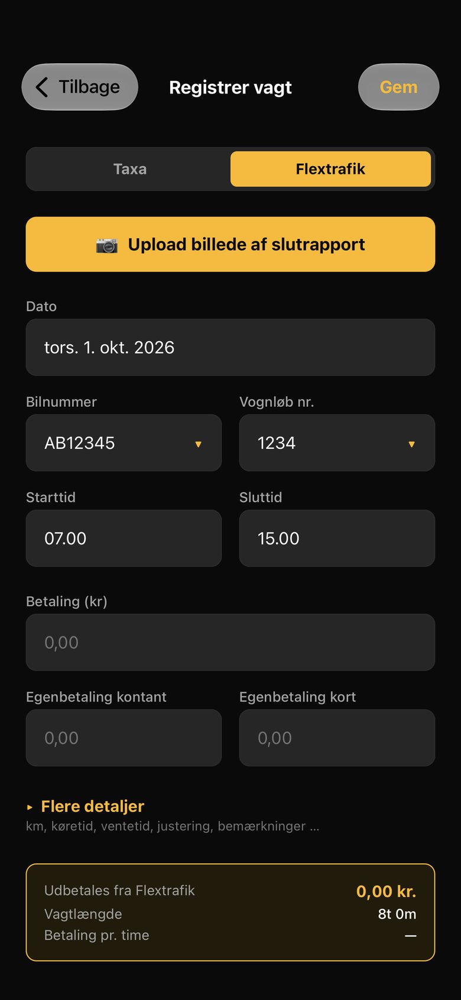
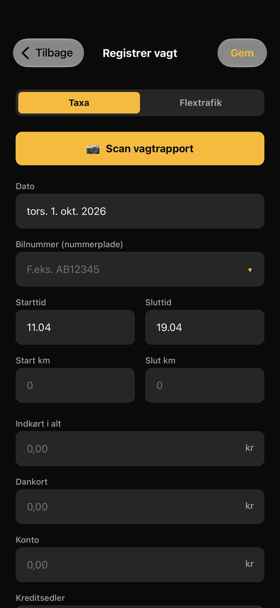
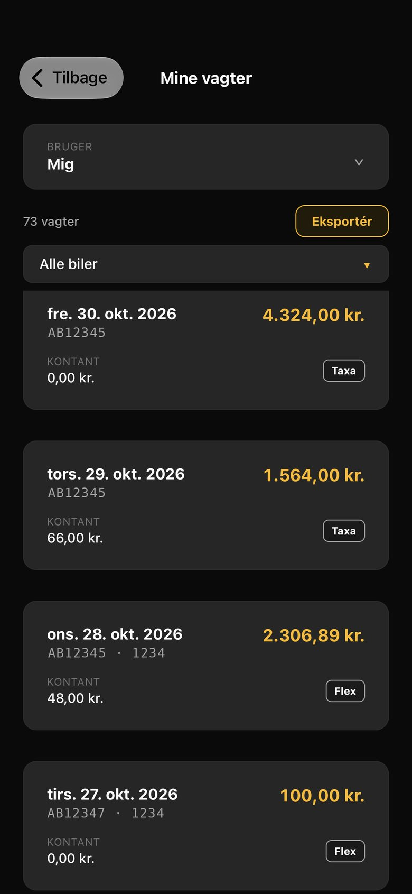
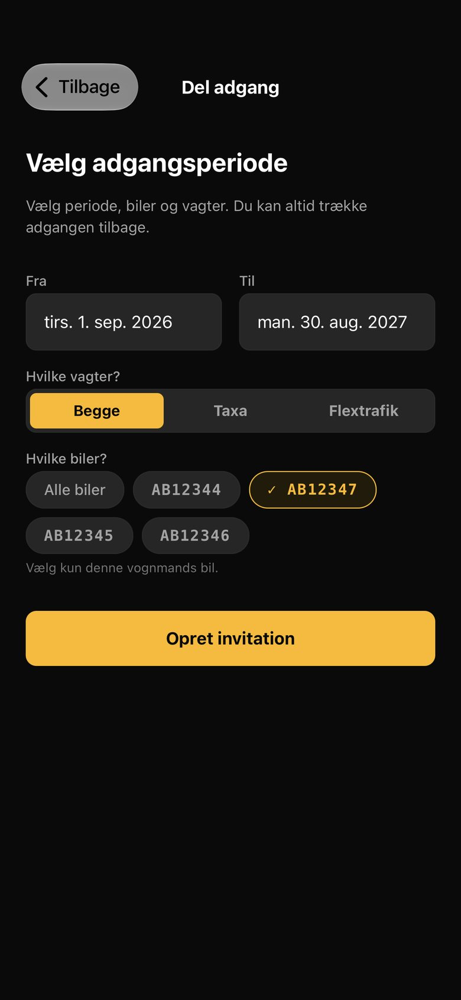
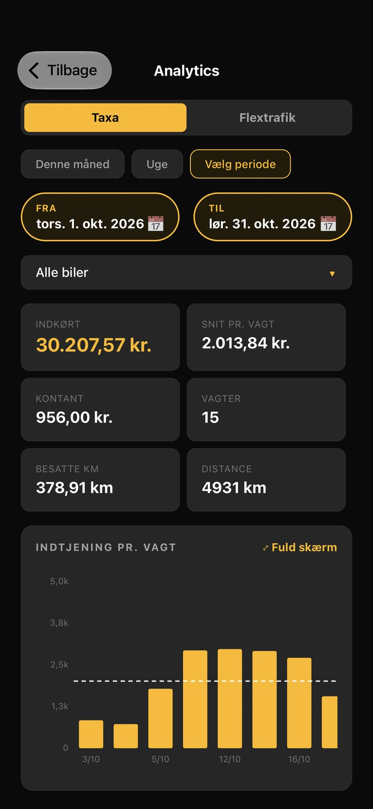
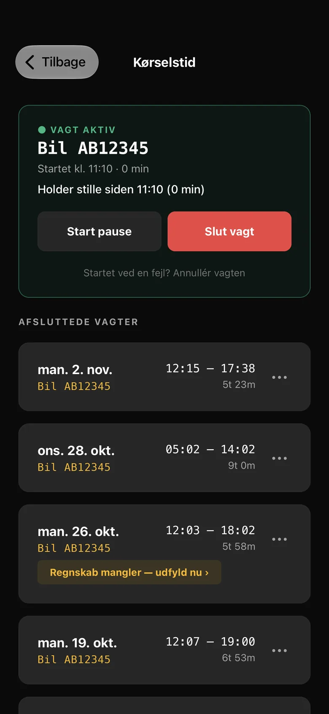

Til taxa- og flextrafikførere
Registrér vagten. Del den. Se hvad du tjener.
TaxaBog er en gratis app til taxa- og flextrafikførere. Tag et billede af din vagtrapport, så udfylder appen vagten for dig. Du ser alle dine vagter og hvad du tjener, kan eksportere til Excel og give din vognmand adgang med en kode. Kører du flextrafik, kan telefonens GPS dokumentere din ventetid.

Nyt i version 1.1
Scan rapporten, så udfylder appen vagten
Du behøver ikke taste tallene ind selv. Tag et billede, tjek tallene, og tryk Gem.
Taxa: vagtrapporten fra taxameteret
- Tryk Registrér vagt og derefter Scan vagtrapport.
- Tag et billede af vagtrapporten, eller vælg et billede, du har taget.
- Appen udfylder beløb, km og tider. Kører du på DRIVR eller Uber, virker deres vagtoversigt også.
- Felter, appen er usikker på, bliver gule. Tjek dem, og tryk Gem.
Flextrafik: slutrapporten
- Tryk Registrér vagt, vælg Flextrafik og tryk Upload billede af slutrapport.
- Vælg et skærmbillede af slutrapporten.
- Appen udfylder vognløb, tider og betaling. Billedet læses kun på din telefon.
Dine oplysninger er beskyttet. Før et taxa-billede bliver aflæst, dækker telefonen navne, CVR-, tilladelses-, chauffør- og telefonnumre med sort. Først derefter aflæser en ekstern AI-tjeneste tallene. Billedet bliver ikke gemt. Læs mere i privatlivspolitikken.


Det kan TaxaBog
Lavet til hverdagen i taxa og flextrafik, med de ord du bruger i forvejen.
Registrér vagt
Tryk Registrér vagt, vælg Taxa eller Flextrafik, og skriv dagens tal. Eller scan rapporten, så gør appen det for dig. Start-km hentes fra din sidste vagt i samme bil.
- Taxa: indkørt, Dankort, konto, kreditsedler, kontant, udgifter og km
- Flextrafik: vognløb, betaling og egenbetaling (kontant og kort)
- Virker uden net og sender vagten, når du er online igen
- Ret eller slet en vagt bagefter, hvis noget er forkert

Mine vagter og Excel
Alle dine vagter samlet ét sted, i stedet for papir og sedler. Tryk Eksportér, så får du dem i et regneark.
- Se taxa og flextrafik, og filtrér på bil
- Excel-filen har taxa og flextrafik på hver sin fane
- Filen får dit navn og tidspunktet, så du nemt finder den igen
- Send den til din revisor eller vognmand, eller gem den selv

Del og giv adgang
Du bestemmer, hvem der må se dine vagter. Lav en kode til din vognmand, og vælg selv periode, biler og vagttype. Du kan altid trække adgangen tilbage.
- Kører du for flere vognmænd, ser hver kun vagterne i sin egen bil
- Vælg taxa, flextrafik eller begge
- Vognmanden kan kun se vagterne, ikke ændre dem

Analyse
Se hvad du tjener: hvad du har kørt ind, hvor meget der var kontant, og hvad en vagt giver i snit.
- Denne måned, uge for uge, eller vælg selv perioden
- Indkørt, snit pr. vagt, kontant, antal vagter, besatte km og distance
- Søjlediagram for hver vagt med gennemsnitslinje, også i fuld skærm
- Taxa og Flextrafik hver for sig, og filtrér på bil

Til flextrafik · GPS
Kørselstid: få ventetiden i flextrafik dokumenteret
I flextrafik tæller tiden, også ventetiden ved adresserne og mellem turene. Telefonens GPS viser, hvor meget af vagten der var arbejde, pause og ventetid. Du trykker to gange om dagen, og resten registrerer appen selv. Rapporten kan vedlægges, hvis vognafregningen ikke stemmer.
Bruger telefonens GPS, kun mens vagten kører — der skal ikke installeres noget i bilen. Læg telefonen i holderen, gerne på opladning. Kører du almindelig taxa med taxameter, har du ikke brug for Kørselstid. Resten af TaxaBog virker for alle.

Sådan virker Kørselstid
- Start vagtenTryk Start vagt og skriv bilens nummerplade. Telefonens GPS registrerer nu, hvor bilen kører og holder stille.
- Kør som du plejerAppen sorterer selv dine stop efter, hvor længe bilen holder stille, og alle stop kommer med i rapporten. Venter du på en kunde, minder appen dig efter 3 minutter om at skrive stopnummeret, så står det i rapporten.
- Hold pauseTryk Start pause og Slut pause. Pausen trækkes fra arbejdstiden.
- Slut vagtenTryk Slut vagt. Du ser med det samme vagtens længde, arbejdstid, pauser og ventetid.
- Få rapportenLav en PDF med alle stop, tider og adresser, klar til at vedlægge, hvis vognafregningen ikke stemmer. Du kan også dele dine vagter med din vognmand via Del adgang.
| Under 2 min | Trafik og lys. Tæller som kørsel |
|---|---|
| 2–10 min | Arbejdstid. Ventetid ved adresser og mellem ture. Du kan gennemgå og bekræfte stoppene, når du slutter vagten |
| Over 10 min | Appen sender dig en besked og spørger: Pause, Venter på arbejde eller Slut vagt. Svarer du ikke, tæller stoppet som arbejde og markeres til gennemsyn |
GPS bruges kun, mens vagten kører, og appen beder kun om adgang “Mens appen er i brug”. Når du slutter vagten, stopper GPS’en.
Om EgyDan ApS
EgyDan ApS er et dansk vognmandsfirma i flextrafik. Vi kører selv, og TaxaBog er bygget ud fra det, vi oplever bag rattet: lange ventetider ved adresserne, vagtregnskab på papir og vognafregninger, der er svære at kontrollere.
Målet er enkelt. Førere og vognmænd skal kunne se, hvad der faktisk blev kørt, og have dokumentationen klar, når tallene ikke stemmer.
Kontakt
TaxaBog kan hentes i App Store til iPhone og i Google Play til Android. Har du spørgsmål? Skriv til os.
EgyDan ApS · CVR 46090942